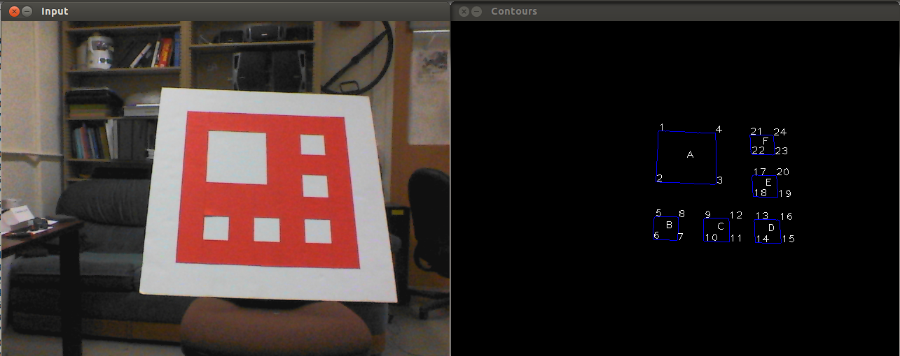

Accurate Vision-Based Landing For Multicopter UAVs
CS280: Project Presentation
Constantin Berzan, Nahush Bhanage, Sunil Shah
Overview
- Motivation
- Approach
- Results
- Challenges
Motivation
Approach
- Hardware architecture
- Corner detection
- Pose estimation
- Landing controller
(Adapted from Sharp, Shakernia, Sastry, "A Vision System for Landing an Unmanned Aerial Vehicle", ICRA 2001)
Hardware architecture

Corner detection
Pose estimation
- Input: 24 point correspondences
- Output: camera pose (x, y, z, roll, pitch, yaw)
- Have 48 equations (2 for each point pair)
- System of equations has 6 degrees of freedom
- Solve it using an SVD trick
Landing controller
- Implemented basic proportional controller.
- Relied upon ArduCopter autopilot for low level stabilisation and control.
Results
- Hardware setup
- Pose estimation
- Automated landing
Hardware setup

Pose estimation
Automated landing
- Hardware is hard.
- Noisy data and sub-optimal flying conditions means we were unable to fully test our UAV landing.
Challenges and Future Directions
- Uncooperative hardware
- Field of view
Future Directions
- Use higher quality optics.
- Explore landing pad design.
- Allow landing in darker scenarios.
- Use more advanced control loops (PID instead of just P).